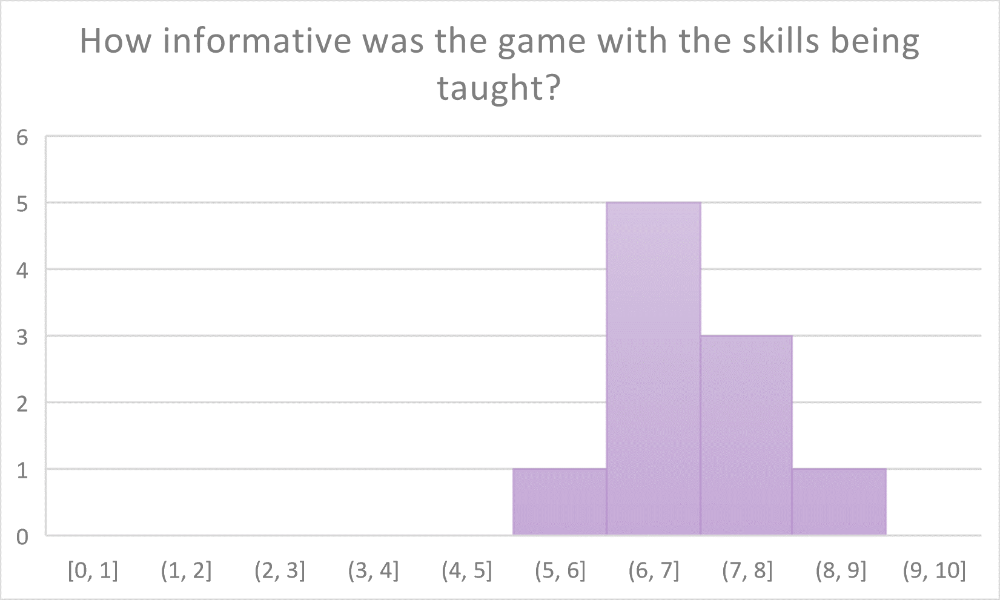
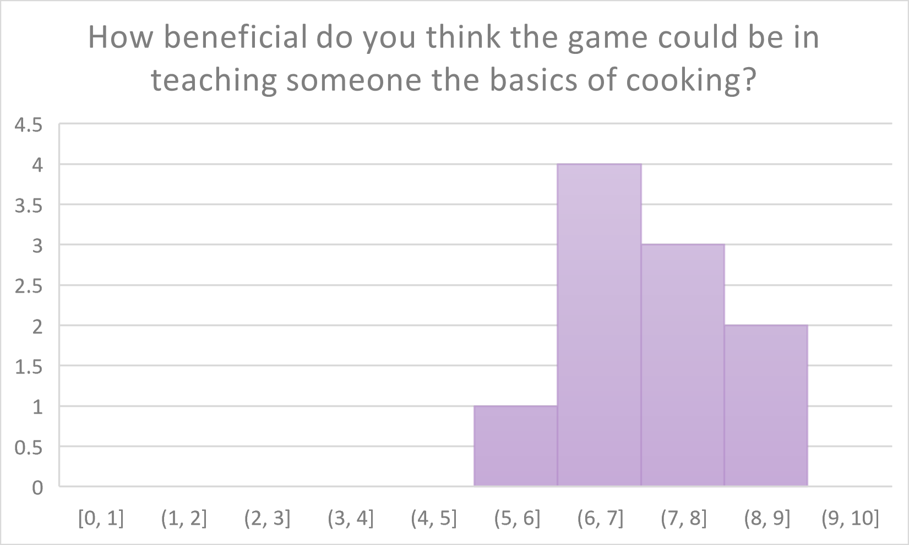
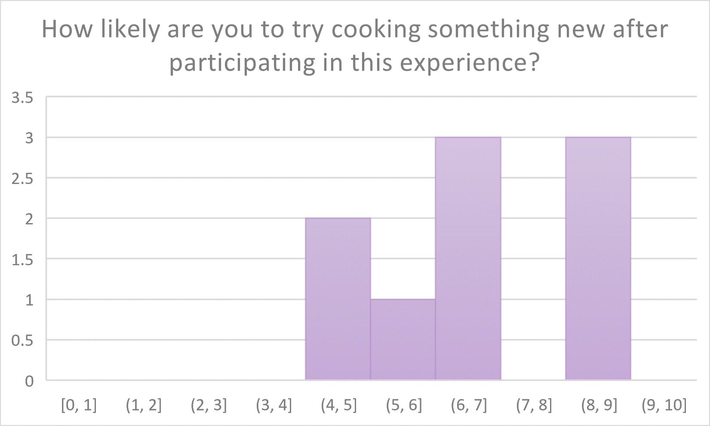
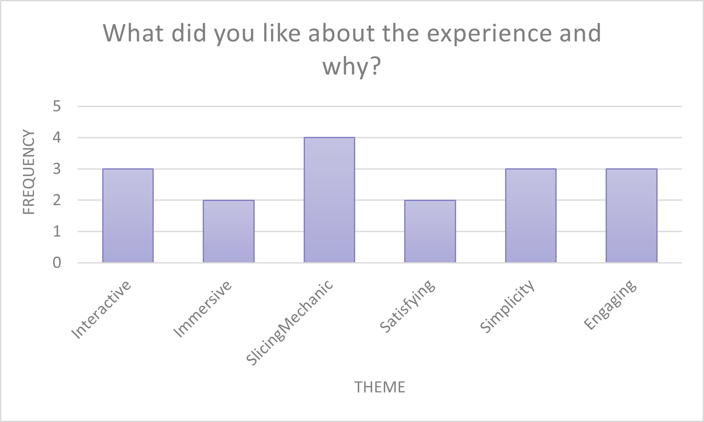

About this Project
This project is my undergraduate dissertation topic. I wanted to explore how Virtual Reality can be used to teach transferable skills to people. The skill that I focused on in this project was cooking. As a student myself, I have seen countless fellow students unable to cook good, healthy food for a multitude of different reasons. I made a VR game in Unity, alongside my dissertation report, where the player is tasked with making a bowl of spaghetti bolognese. I had ten participants play the game and complete a survey which I then analysed and reviewed to support my dissertation report. The project overall was incredibly interesting and I would love to continue this project on a much larger scope one day.
My Findings
 The project was a success in terms of the participant surveys, which were answered on a 10-point likert scale. The participants were asked how informative they thought the experience was, and every participant answered 5 or higher on the 10-point likert scale. This was pleasant to see as it meant that the experience had achieved one of its primary goals, to be functional as a learning resource. Similarly, the participants mentioned that the experience was beneficial to them, with the majority of participants expressing that they were more than likely going to try and cook something new after the experience.
- 
- 
 In addition to asking quantative questions to the participants, I also asked a couple of qualatative ones. One of these questions was regarding what each participant liked about the experience and why. These answers were coded to find common themes and phrases, and placed into the data table on the left. The participants found the experience interactive, immersive, satisfying, engaging, and simple. There were also a number of participants that appreciated the cutting mechanic that was in place for slicing the vegetables for the recipe. The slicing mechanic was sourced from GitHub (Ezy-Slice by David Arayan) and credited in my dissertation as appropriate. I believe that a large part of the immersion that participants found was due to this slicing mechanic, as it let each participant choose how they were cutting each vegetable up, instead of a pre-cut model being used.
My Dissertation
My final dissertation can be read below!